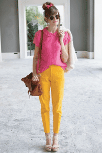

Be bright. Be bold. Be OKASHII.
 Inspired by classic horror films, Bob Dylan and The Wizard of Oz; Okashii is a little bit surprising, a little bit bohemian and a lot Dorothy Gale. Like Dorothy’s trip through Oz, Okashii is a journey. Our yellow brick road is laid with a rainbow of eclectic patterns, dream-like colors, and vintage silhouettes. The difference between Okashii and Oz: we want the journey to last. We want you to embrace childhood whimsy everyday and wear your imagination.
Okashii was brought to life by Nicole Erica Herman in San Francisco, CA. Nicole saw Okashii come together as a mix of her own visions, her courses at FIDM and countless hours spent around the city she calls home. Sketches were done on MUNI, inspiration boards created in the basement of The Wax Museum, and patterns cut on her living room floor in the Mission. Throughout the city and over bowls of furikake rice and cups of homemade kombucha, Nicole shaped Okashii into what you see today. いいですね!